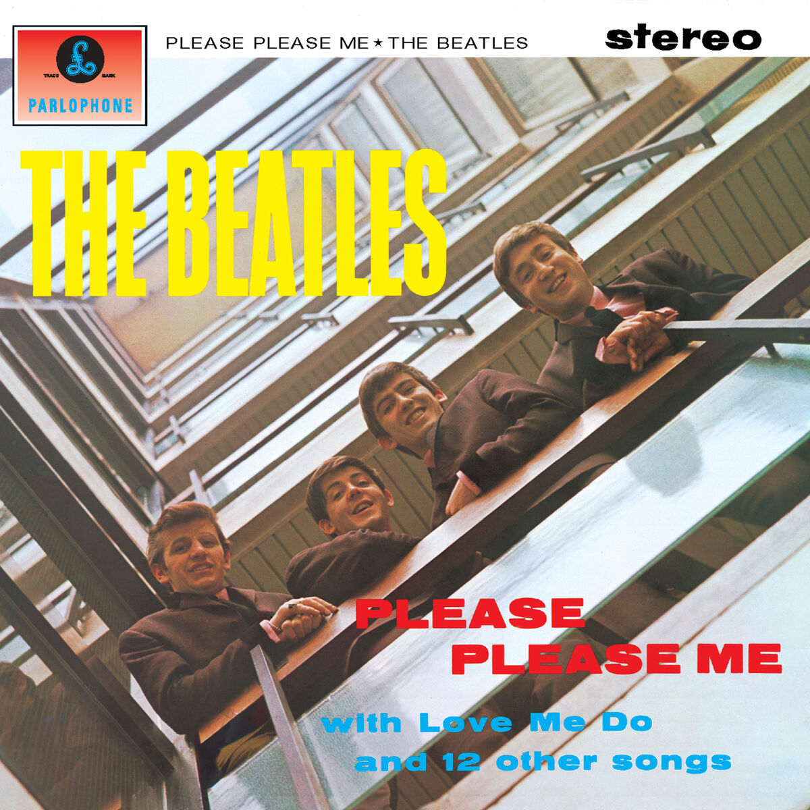
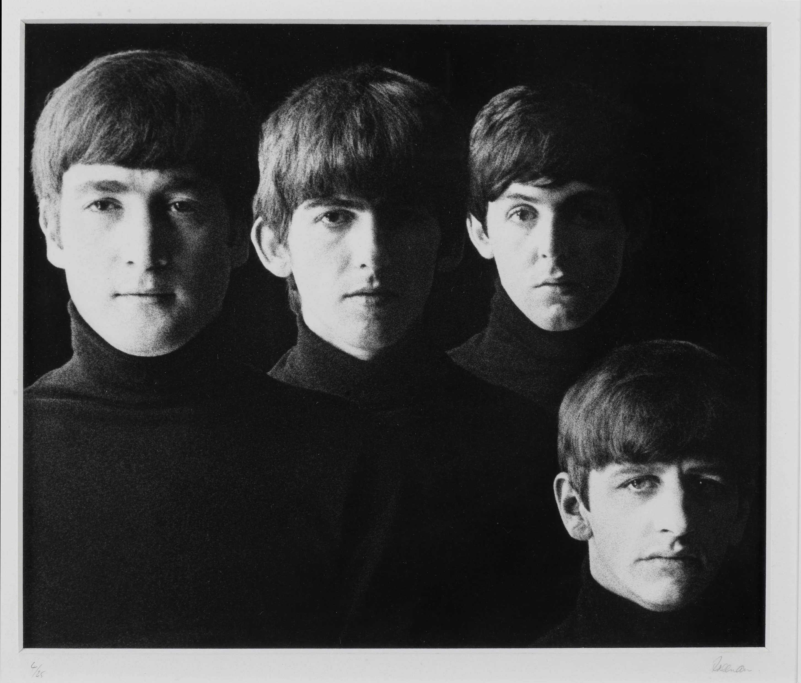
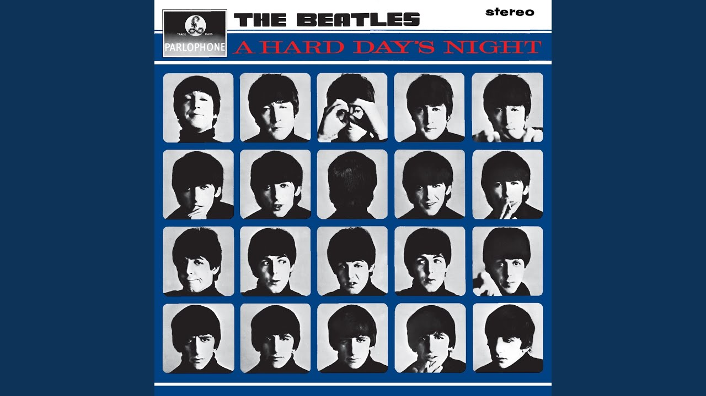
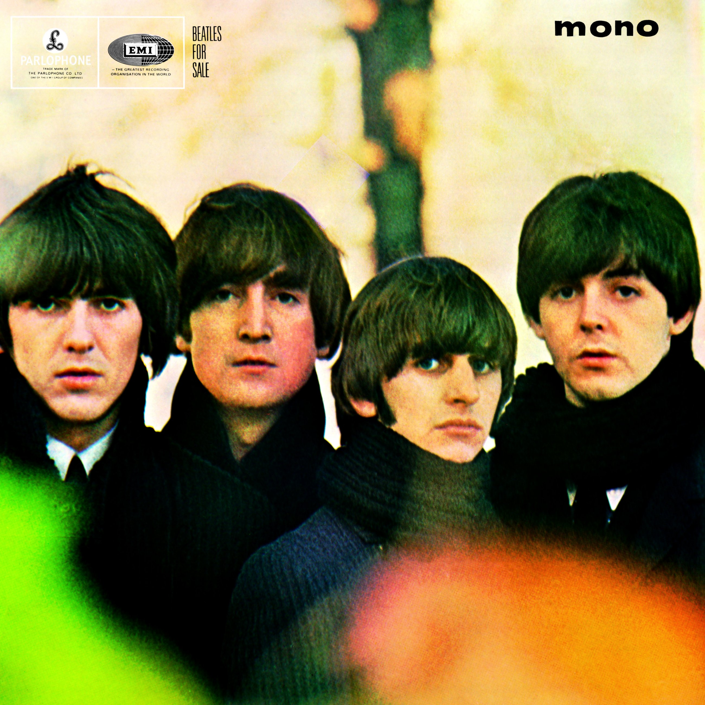
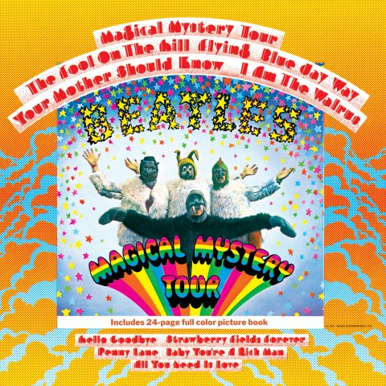
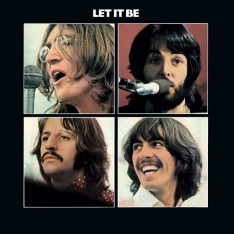

 |
Please Please Me22 de marzo de 1963 |
- I Saw Her Standing There 2:55
- Misery 1:49
- Anna (Go To Him) 2:57
- Chains 2:26
- Boys 2:27
- Ask Me Why 2:26
- Please Please Me 2:03
- Love Me Do 2:22
- P.S. I Love You 2:04
- Baby It's You 2:40
- Do You Want To Know A Secret 1:59
- A Taste Of Honey 2:03
- There's A Place 1:51
- Twist And Shout 2:35
|
 |
With The Beatles22 de noviembre de 1963 |
- It Won't Be Long 2:13
- All I've Got To Do 2:02
- All My Loving 2:08
- Don't Bother Me 2:28
- Little Child 1:46
- Till There Was You 2:14
- Please Mister Postman 2:34
- Roll Over Beethoven 2:45
- Hold Me Tight 2:32
- You Really Got A Hold On Me 3:01
- I Wanna Be Your Man 2:00
- Devil In Her Heart 2:25
- Not A Second Time 2:07
- Money (That's What I Want) 2:50
|
 |
A Hard Day's Night10 de julio de 1964 |
- A Hard Day's Night 2:34
- I Should Have Known Better 2:43
- If I Fell 2:19
- I'm Happy Just To Dance With You 1:56
- And I Love Her 2:30
- Tell Me Why 2:09
- Can't Buy Me Love 2:12
- Any Time At All 2:11
- I'll Cry Instead 1:46
- Things We Said Today 2:35
- When I Get Home 2:17
- You Can't Do That 2:35
- I'll Be Back 2:24
|
 |
Beatles For Sale4 de diciembre de 1964 |
- No Reply 2:15
- I'm A Loser 2:31
- Baby's In Black 2:05
- Rock And Roll Music 2:32
- I'll Follow The Sun 1:49
- Mr. Moonlight 2:33
- Kansas City/Hey-Hey-Hey-Hey! 2:33
- Eight Days A Week 2:44
- Words Of Love 2:12
- Honey Don't 2:55
- Every Little Thing 2:01
- I Don't Want To Spoil The Party 2:33
- What You're Doing 2:30
- Everybody's Trying To Be My Baby 2:23
|
 |
Help!6 de agosto de 1965 |
- Help! 2:18
- The Night Before 2:33
- You've Got To Hide Your Love Away 2:08
- I Need You 2:28
- Another Girl 2:05
- You're Going To Lose That Girl 2:17
- Ticket To Ride 3:10
- Act Naturally 2:29
- It's Only Love 1:54
- You Like Me Too Much 2:35
- Tell Me What You See 2:36
- I've Just Seen A Face 2:04
- Yesterday 2:05
- Dizzy Miss Lizzy 2:53
|
 |
Rubber Soul3 de diciembre de 1965 |
- Drive My Car 2:25
- Norwegian Wood 2:01
- You Won't See Me 3:18
- Nowhere Man 2:40
- Think For Yourself 2:16
- The Word 2:41
- Michelle 2:40
- What Goes On 2:47
- Girl 2:30
- I'm Looking Through You 2:23
- In My Life 2:24
- Wait 2:12
- If I Needed Someone 2:20
- Run For Your Life 2:18
|
 |
Revolver5 de agosto de 1966 |
- Taxman 2:39
- Eleanor Rigby 2:06
- I'm Only Sleeping 3:00
- Love You To 2:59
- Here, There And Everywhere 2:24
- Yellow Submarine 2:38
- She Said She Said 2:36
- Good Day Sunshine 2:09
- And Your Bird Can Sing 2:00
- For No One 1:59
- Doctor Robert 2:14
- I Want To Tell You 2:27
- Got To Get You Into My Life 2:29
- Tomorrow Never Knows 2:57
|
 |
Sgt. Pepper's Lonely Hearts Club Band1 de junio de 1967 |
- Sgt. Pepper's Lonely Hearts Club Band 2:02
- With A Little Help From My Friends 2:44
- Lucy In The Sky With Diamonds 3:28
- Getting Better 2:47
- Fixing A Hole 2:36
- She's Leaving Home 3:35
- Being For The Benefit Of Mr. Kite! 2:37
- Within You Without You 5:05
- When I'm Sixty-Four 2:37
- Lovely Rita 2:42
- Good Morning Good Morning 2:41
- Sgt. Pepper's (Reprise) 1:18
- A Day In The Life 5:33
|
 |
Magical Mystery Tour27 de noviembre de 1967 |
- Magical Mystery Tour 2:51
- The Fool On The Hill 3:00
- Flying 2:16
- Blue Jay Way 3:56
- Your Mother Should Know 2:29
- I Am The Walrus 4:36
- Hello, Goodbye 3:31
- Strawberry Fields Forever 4:10
- Penny Lane 3:03
- Baby, You're A Rich Man 3:03
- All You Need Is Love 3:48
|
|
The Beatles (White Album)22 de noviembre de 1968 |
- Back In The U.S.S.R. 2:43
- Dear Prudence 3:56
- Glass Onion 2:17
- Ob-La-Di, Ob-La-Da 3:08
- Wild Honey Pie 0:52
- The Continuing Story of Bungalow Bill 3:14
- While My Guitar Gently Weeps 4:45
- Happiness Is A Warm Gun 2:43
- Martha My Dear 2:28
- I'm So Tired 2:03
- Blackbird 2:18
- Piggies 2:04
- Rocky Raccoon 3:32
- Don't Pass Me By 3:50
- Why Don't We Do It In The Road? 1:41
- I Will 1:46
- Julia 2:54
- Birthday 2:42
- Yer Blues 4:01
- Mother Nature's Son 2:48
- Everybody's Got Something To Hide... 2:24
- Sexy Sadie 3:15
- Helter Skelter 4:29
- Long, Long, Long 3:04
- Revolution 1 4:15
- Honey Pie 2:41
- Savoy Truffle 2:54
- Cry Baby Cry 3:02
- Revolution 9 8:22
- Good Night 3:11
|
 |
Yellow Submarine13 de enero de 1969 |
- Yellow Submarine 2:38
- Only A Northern Song 3:24
- All Together Now 2:11
- Hey Bulldog 3:11
- It's All Too Much 6:25
- All You Need Is Love 3:51
- Pepperland (Inst.) 2:21
- Sea of Time (Inst.) 3:00
- Sea of Holes (Inst.) 2:17
- Sea of Monsters (Inst.) 3:37
- March of the Meanies (Inst.) 2:22
- Pepperland Laid Waste (Inst.) 2:19
- Yellow Submarine in Pepperland (Inst.) 2:13
|
 |
Abbey Road26 de septiembre de 1969 |
- Come Together 4:20
- Something 3:03
- Maxwell's Silver Hammer 3:27
- Oh! Darling 3:26
- Octopus's Garden 2:51
- I Want You (She's So Heavy) 7:47
- Here Comes The Sun 3:05
- Because 2:45
- You Never Give Me Your Money 4:02
- Sun King 2:26
- Mean Mr. Mustard 1:06
- Polythene Pam 1:12
- She Came In Through The Bathroom Window 1:57
- Golden Slumbers 1:31
- Carry That Weight 1:36
- The End 2:19
- Her Majesty 0:23
|
 |
Let It Be8 de mayo de 1970 |
- Two Of Us 3:36
- Dig A Pony 3:54
- Across The Universe 3:48
- I Me Mine 2:25
- Dig It 0:50
- Let It Be 4:03
- Maggie Mae 0:40
- I've Got A Feeling 3:37
- One After 909 2:54
- The Long And Winding Road 3:37
- For You Blue 2:32
- Get Back 3:07
|